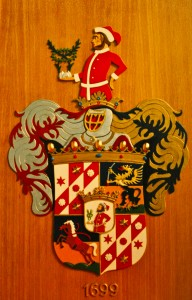

Crowdsourcing ! Payez 100 € pour un blason
Ce site s'appelle gartnerich.com parce qu'il est géré par la famille Gartner. Et nous, les Gartner, sommes nobles – enfin, un peu au moins... En soi, ce n'est pas spectaculaire, car tant que l'on ne porte pas de "von" dans son nom (ou mieux encore, un "Graf"), cela n'apporte rien. Cependant, il y a un avantage : un blason ! Notre blason ressemble à ceci :

Notre lettre de noblesse date du 15.11.1699 et y est décrit le blason à peu près comme suit :
…Blason noble à utiliser et à arborer à jamais gracieusement accordé et permis sous le nom : “un écu écartelé, dont le champ arrière inférieur et le champ avant supérieur sont divisés en trois bandes égales, les bandes arrière et avant étant blanches, et celle du milieu rouge ; De l'angle avant inférieur à l'angle arrière supérieur, une bande diagonale est tracée, rouge sur le blanc et blanche sur le rouge, sur chaque bande blanche allongée se trouvent deux étoiles dorées hexagonales sur le rouge, et dans la bande diagonale, une rose blanche sur le rouge et une rose rouge sur le blanc. Le champ avant inférieur et le champ arrière supérieur, au milieu, sont divisés horizontalement, la partie inférieure étant jaune ou dorée, et la partie supérieure bleue ou azur, et dans la partie inférieure, sur une montagne verte à trois sommets, un cheval brun dressé pour le saut, sellé avec un frein flottant, dans la partie arrière supérieure, un griffon debout sur une montagne également à trois sommets apparaît, de bas en haut bleu ou azur, et dans la partie supérieure jaune ou dorée, avec des ailes déployées, une langue rouge saillante et tenant dans sa griffe avant droite un sabre courbé par la poignée, et dans sa griffe gauche la pointe. Au centre de l'écartelé, un écu en cœur blanc ou argenté couronné, dans lequel se trouve un mineur à barbe et cheveux bruns, vêtu d'une tunique rouge ajustée et coiffé d'un bonnet hongrois tombant, dont le revers, la ceinture, les boutons et le revers de la tunique sont blancs ou argentés, la main gauche sur la hanche, et dans la droite tenant une marche de mineur d'où émergent deux branches de palmier vertes, entourées d'une couronne de laurier. Sur l'écu, un casque de tournoi noble, libre, avec des ornements, etc. etc.”
Je souhaiterais maintenant utiliser le blason – ou quelque chose qui lui ressemble. Mais je n'ai trouvé qu'une petite photo dans notre histoire familiale. De plus, le blason est assez orné ; je souhaiterais quelque chose de plus simple et épuré. C'est pourquoi je lance cet appel :
Voici les règles du jeu :
- Le blason doit me plaire – suffisamment pour que je l'utilise. Autrement dit : si je l'utilise, je paie.
- Seul le blason qui me plaît le plus sera récompensé.
- J'obtiens tous les droits d'utilisation du blason. Cela signifie, entre autres, que l'artiste a cédé tous les droits parce qu'il les possède lui-même.
- Pour être explicite : il s'agit d'une œuvre réellement développée par soi-même, rien de copié.
- J'attends jusqu'à fin avril, pas nécessairement plus longtemps.
Les exigences techniques :
- Un ou plusieurs fichiers PSD doivent être fournis.
- Il doit être utilisable en grand et en petit, ou inclure des variantes pour une utilisation grande et petite. Un exemple d'utilisation en grand serait une impression au dos d'un T-shirt. Une utilisation en petit serait sur une balle de golf.
Et voici quelques points avec des indications sur ce que j'aime (ou pas) :
- Je m'imagine la modernisation de manière à ce qu'elle soit moins ornée dans le détail.
- Cela peut être original, mais pas désordonné.
- Il n'est pas nécessaire de rester fidèle au modèle, omettre est permis. Il devrait cependant s'inspirer du blason Gartner.
- Des exemples d'utilisation du blason seraient
- Sur le drapeau de notre remorque de vélo (taille environ DIN A4)
- Sur des T-shirts ou polos, grand au dos ou petit sur la manche.
- Sur ce site web.
- Sur des balles de golf ou des skis.
- Je trouverai sûrement d'autres idées...
À vous de jouer maintenant. Je suis déjà curieux de voir ce qui va arriver – et si quelque chose arrive...
Bonne nuit, – Till.